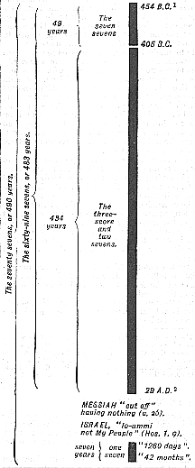

|
For the meaning of this passage, reference must be made to the notes, and especially to the Structures, which are always the best commentary and the surest guide to interpretation. We may set out the three divisions of the whole period on the diagram (not exact to scale) :--  I. THE FIRST PERIOD is simple, being the "seven sevens", or 49 years.II. THE SECOND PERIOD. The "threescore and two sevens",
or 434 years, from 405 B.C. to A.D. 29 = the year of the "cutting off"
of Messiah (see Ap. 50 pp, 60, 61). This was 483 years from the
issuing of the decree in 454 B.C. (i.e. 49 + 434 = 483 years).
III. THE THIRD PERIOD. This is the one seven, i.e.
the seventieth (or "last"), seven which has still to be accounted for.
1. If the seventieth, or "one seven", is to be reckoned from the cutting off of Messiah in direct, continuous, and historic sequence, then it leads us nowhere -- certainly not to any of the six events of v. 24, which are all categorically stated to relate to Daniel's People, "all Israel" (v. 7), and to the holy City "Jerusalem". No interpretation which transfers these six events to Gentiles or to Gentile times, is admissible. If they are continuous, then there is no point or crisis in the Acts of the Apostles which marks their end. If they coincided with any events of importance, such as the end of Peter's ministry or the beginning of that of Paul, or Acts 12 and 13, that would be something. But there is nothing. 2. Messiah was to "have nothing" that was His, "after" His cutting off. This clearly points to the crucifixion of Messiah, and the rejection of His Messianic kingdom. For nearly 2,000 years Messiah has "had nothing" of all the many "glorious things" which have been spoken of Him, in connection with Himself or with His People Israel. 3. This last, or "one seven" of years, is divided into two distinct equal parts (see Ap. 90), and the division takes place in connection with an event which has no connection whatever with any event which has yet taken place. Messiah did not "make a (not the) covenant" of any kind, either with Israel or with any one else, at the end of, or "after" the sixty-ninth week; nor did He "break" any covenant three and a half years later. Man may "make" and "break" covenants, but Divine Covenants are never broken. On the other hand : of "the prince that shall come" it is distinctly stated that he shall do both these very things (vv. 26, 27); and, in Ap. 89 and 90 both are connected with "the time of the end". Hence, we are forced to the conclusion that this last seven of years still awaits its fulfilment; and this fulfilment must be as literal and complete as that of all the other parts of this vision and prophecy; for the end must be the glorious consummation for Israel of v. 24, the complete destruction of "the coming prince" (the false Messiah or Antichrist), and the setting up of the Messiah's kingdom. Nothing less will satisfy all the requirements of Daniel's vision of "the seventy weeks". The Hebrew word rendered "week" is shabua', and means, simply, a "septad", a "hebdomad", or a seven, hence a week, because it is a seven (of days). But in this passage it is confessedly used of a seven of years; and this of necessity, for no other seven of any other portion of time will satisfy the prophecy and fall within its terminus a quo, and the terminus ad quem. Seventy of these sevens of years (or 490 years) are the one subject of this prophecy. We are told exactly when they would commence, and how they were to end. They sum up, within their bounds, all the then counsels of God as to His future dealings with His People Israel; for they are "determined" (the angel said to Daniel) "upon thy People, and upon they Holy City" (v. 24). These words cannot have any other interpretation than "all Israel" (v. 7), and Jerusalem, and the Holy Sanctuary; for that had been the subject of Daniel's prayer, to which this prophecy was sent as the specific answer. (See vv. 2, 7, 16, 17, 18, 19, and especially v. 24.) These "seventy sevens [of years]" are divided into three distinct and separate periods :--
The terminus a quo of the whole period is the issuing of a decree "to restore and to build (or rather, rebuild) Jerusalem." The terminus ad quem of the whole period is the cleansing of the Sanctuary. This is also the end of all the visions of Daniel in chaps. 7-12 (Ap. 89); and all the numbered "days" of 7:25; 8:14; and 12:7, 11, 12, have this cleansing as their object and end. As to the whole period, Daniel is bidden by the angelic Hierophant to "understand ... and consider" (v. 23); while, as to its three separate divisions, Daniel is to "know therefore and understand" (v. 25). See the Structures of these passages, pp. 1196, 1198, 1199. THE FIRST PERIOD. The seven sevens (or 49 years). These commence with "the going forth of the commandment to restore and to build Jerusalem". This was in the first month, Nisan, 454 B.C. (see Ap. 50, pp. 60, 67, and 70). Hanani's report to Nehemiah was made in the ninth month Chisleu, in 455 B.C., three months before; both months being in the "twentieth year of Artaxerxes". See notes on Neh. 1:1 and 2:1; also on pp. 615-18; and Ap. 57. The ARTAXERXES (or Great King) of Neh. 1:1; 2:1, who issues this decree, is identified with the great king ASTYAGES. (See Ap. 57.) ASTYGES was brother-in-law to Nebuchadnezzar. The madness of the latter had at this time lasted for seven years. ASTYGES had evidently in imperial matters been acting for his brother-in-law. This seems to be clear from the fact that the decree was issued in Shushan, and not Babylon; and no one, however great a potentate he might be, would have dared to issue such a decree, connected with the affairs of the suzerainty of Babylon, unless he possessed the authority to do so. Therefore it may be put thus : In Nisan, 454 B.C., ASTYAGES (i.e. Artaxerxes = the Great King) issued the decree spoken of in Dan. 9:25. Later, in the same year, Nebuchadnezzar's "madness" was lifted off him. "At the end of the days" his understanding and reason returned to him, it seems, as suddenly as they had left him; and he thereupon issued his imperial proclamation throughout his dominions, as recorded in Dan. 4:34-37. See the note there on v. 34. The seven sevens therefore, meaning seven sevens of literal years, occupied 49 years (454 B.C. to 405 B.C. = 49 years). They began in 454 B.C. with the decree, and end with the completion of the walls and the dedication of the Temple in 405 B.C. See Ezra 6:10, 15-19. It must be remembered that the issuing of this decree took place long before Ezra appeared on the scene; and before any of the subsequent decrees of other monarchs, which all had to do with the Temple; whereas the first, issued to Nehemiah (2:1), had to do only with the "City" and its "walls". See the notes on Ezra-Nehemiah, and Appendix 58. (*3) THE SECOND PERIOD. The sixty-two sevens (or 434 years). These follow on directly from the end of the seven sevens of the First Period, and close with the cutting off of the Messiah. THE THIRD PERIOD. The last, or the seventieth seven.
This period is yet future, and awaits the same literal fulfilment as the
other two periods.
(*1) Archbishop Ussher's Chronology was first added to the A.V. by Bishop Lloyd in the edition of 1701. But, in Neh. 2:1, Bishop Lloyd put his own date "445 B.C.", to suit his own theory. Archbishop Ussher's date for the commencement of the reign of Artaxerxes was A.M. 3531, which, in his Collatio Annorum, corresponds to 474 B.C. "The twentieth year of Artaxerxes" would, therefore, be 454 B.C., as given above. (*2) The era called "Anno Domini" was first fixed by a monk (Denys le Petit, commonly know by his Latin name, Dionysius Exiguus), about A.D. 532. It did not come into general use for some centuries. Charles III of Germany was the first who used the expression, "in the year of our Lord", in 879. It was found afterward that a mistake had been made by fixing the era four years too late! this explains the marginal notes in Matt. 2:1 and Luke 2:20, "The fourth year before the Common Account called Anno Domini." (In some editions of the A.V. we have seen "the fifth year", Luke 2:1, also "the sixth year", Luke 1:6.) Hence, the year called A.D. 33 was really the year A.D. 29. This, with 454, makes exactly 483 years, or 69 weeks of years. (*3) N.B. There was a further division of this first period
of seven sevens which may be mentioned. From the decree of Neh. 2:1
to the end of the Babylonian servitude (see notes on p. 615), which was
the "first year of DARIUS" ( = CYRUS, see Ap. 57) the son of ASTYAGES,
was 28 years (454 - 426 = 28); and those events closed the fourth
of the seven sevens. See Ap. 50, p. 60.
|